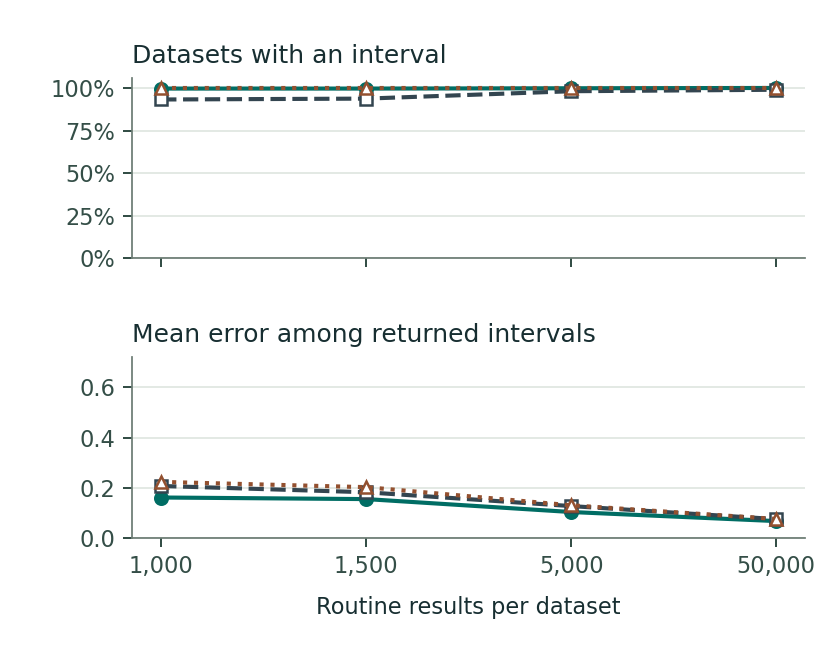
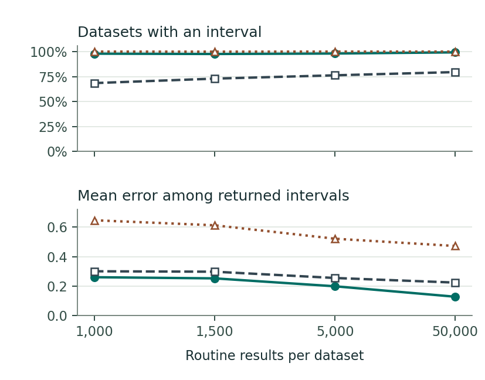
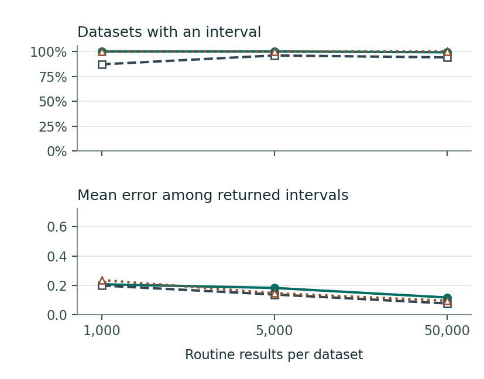
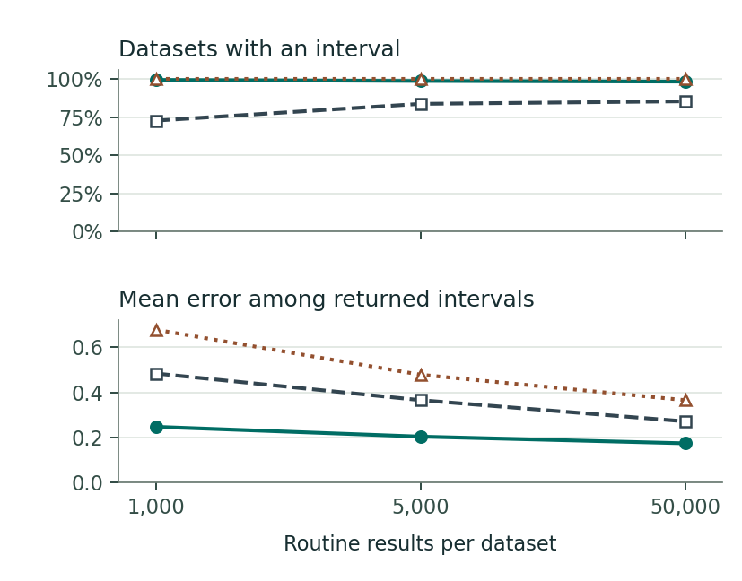

Evidence
Intervals returned and their accuracy in independent confirmation simulations and on RIbench.
Independent confirmation · RIbench · Reporting outcomes · Limits of the evidence
Reading the tables
The combined method fits the anchoredRI model first. If that fit cannot report an interval, it tries anchorRefine, a refineR-based estimate adjusted toward the screened patients and checked against their results. Checked refineR applies the same screened-patient check used for the fallback. Unchecked refineR uses the estimates before that check.
Error is the average absolute difference between estimated and true limits in standard deviations on the transformed reference scale, with each limit’s error capped at 5. Each method’s mean error uses the datasets where that method returned an interval. RIbench scores only the upper limit in its one-sided CRP comparisons.
RIbench paper · Scoring code · Published accuracy table · Study report (Task G)
Independent confirmation
The combined method met all 16 prespecified conditions on 7,488 independently generated simulation datasets. Those conditions compared it with using the checked fallback alone. The tables below compare the combined method with checked and unchecked refineR.
| Routine results per dataset | Share of patients with disease | Combined method% with interval · mean error | Checked refineR% with interval · mean error | Unchecked refineR% with interval · mean error |
|---|---|---|---|---|
| 1,000 | ≤20% | 99.7%0.161 | 93.2%0.207 | 100%0.223 |
| >20% | 97.9%0.260 | 68.4%0.300 | 100%0.647 | |
| 1,500 | ≤20% | 99.7%0.155 | 93.8%0.182 | 100%0.202 |
| >20% | 97.6%0.252 | 72.9%0.297 | 99.9%0.613 | |
| 5,000 | ≤20% | 99.8%0.103 | 98.1%0.127 | 100%0.130 |
| >20% | 98.1%0.198 | 76.2%0.255 | 100%0.522 | |
| 50,000 | ≤20% | 100%0.067 | 99.0%0.075 | 100%0.075 |
| >20% | 99.2%0.127 | 79.5%0.223 | 100%0.472 |
Combined method and checked refineR · Confirmation fits · Confirmation study report
RIbench (descriptive)
RIbench contributed 4,320 simulated datasets. In the groups where 20% or less of patients had disease, checked refineR returned fewer intervals at each size and those intervals had lower mean error. At 50,000 routine results in that group, unchecked refineR also had lower mean error than the combined method.
| Routine results per dataset | Share of patients with disease | Combined method% with interval · mean error | Checked refineR% with interval · mean error | Unchecked refineR% with interval · mean error |
|---|---|---|---|---|
| 1,000 | ≤20% | 100%0.207 | 87.1%0.198 | 100%0.235 |
| >20% | 99.3%0.247 | 72.6%0.484 | 100%0.679 | |
| 5,000 | ≤20% | 100%0.182 | 96.0%0.137 | 100%0.146 |
| >20% | 98.6%0.203 | 83.6%0.365 | 100%0.479 | |
| 50,000 | ≤20% | 99.2%0.117 | 94.0%0.076 | 100%0.095 |
| >20% | 98.2%0.173 | 85.3%0.271 | 100%0.365 |
Combined method and checked refineR · RIbench smaller datasets · RIbench 50,000-result datasets
- Combined method
- Checked refineR
- Unchecked refineR
Confirmation, ≤20% with disease

Confirmation, >20% with disease

RIbench, ≤20% with disease

RIbench, >20% with disease

Which method supplied the interval?
Counts and percentages are based on all datasets of the stated size. The combined method returned an interval on 98.2–99.5% of the independent confirmation datasets and 98.7–99.7% of the RIbench datasets, depending on dataset size.
| Routine results per dataset | anchoredRI | Fallback | No interval |
|---|---|---|---|
| 1,000 | 1,753 (93.6%) | 90 (4.8%) | 29 (1.5%) |
| 1,500 | 1,767 (94.4%) | 72 (3.8%) | 33 (1.8%) |
| 5,000 | 1,759 (94.0%) | 87 (4.6%) | 26 (1.4%) |
| 50,000 | 1,794 (95.8%) | 68 (3.6%) | 10 (0.5%) |
| Total | 7,073 (94.5%) | 317 (4.2%) | 98 (1.3%) |
| Routine results per dataset | anchoredRI | Fallback | No interval |
|---|---|---|---|
| 1,000 | 1,412 (98.1%) | 23 (1.6%) | 5 (0.3%) |
| 5,000 | 1,369 (95.1%) | 61 (4.2%) | 10 (0.7%) |
| 50,000 | 1,135 (78.8%) | 286 (19.9%) | 19 (1.3%) |
| Total | 3,916 (90.6%) | 370 (8.6%) | 34 (0.8%) |
Limits of the evidence
- On RIbench, with 20% of patients with disease or less, trying the fallback first had slightly lower loss at all three sizes. Each paired 95% interval for the difference included zero. Loss scores a missing interval as an error of 5. Order comparison
- In the same subgroup of the independent confirmation simulations, trying anchoredRI first had lower loss at every tested size. All four paired 95% intervals excluded zero. Order comparison
- The confirmation simulations used the Box-Cox design from the fallback study, including a shape with λ = 0.5 that the anchoredRI model can only approximate. Accuracy between 5,000 and 50,000 routine results has yet to be tested directly. Simulation design
- The combined method was evaluated with exactly 40 screened patients. The package warns at other counts and skips the fallback below 40. Screened-patient count warning
- Bootstrap confidence intervals are unavailable for fallback estimates. Coverage has yet to be validated for either method. Bootstrap details
- The selected model can occasionally differ across computers. Model diagnostics
- The fallback inherits a small sensitivity to measurement units from refineR. Changing units and converting back moved a limit by more than 0.1% of the interval width on 36 of 720 development datasets. Fallback study report
- When many patients have disease and their results overlap heavily with the reference distribution, an inaccurate interval can pass the first fit’s checks. Earlier evidence
anchorRefine research record · Number-to-source list · Install anchoredRI